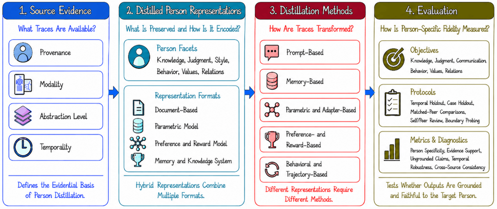
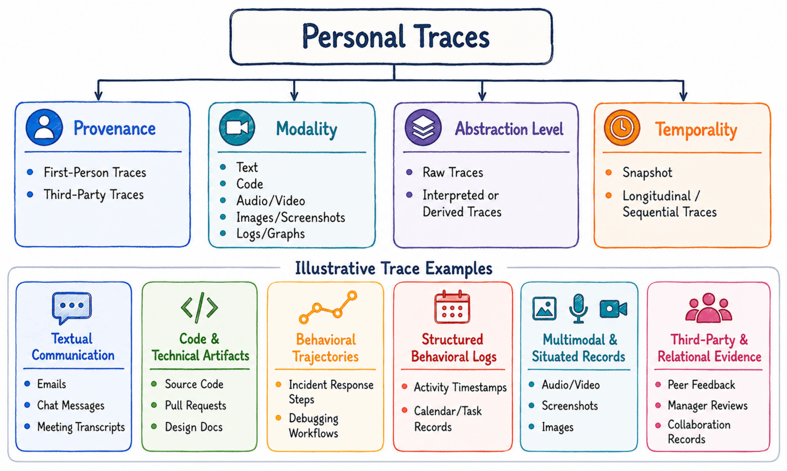
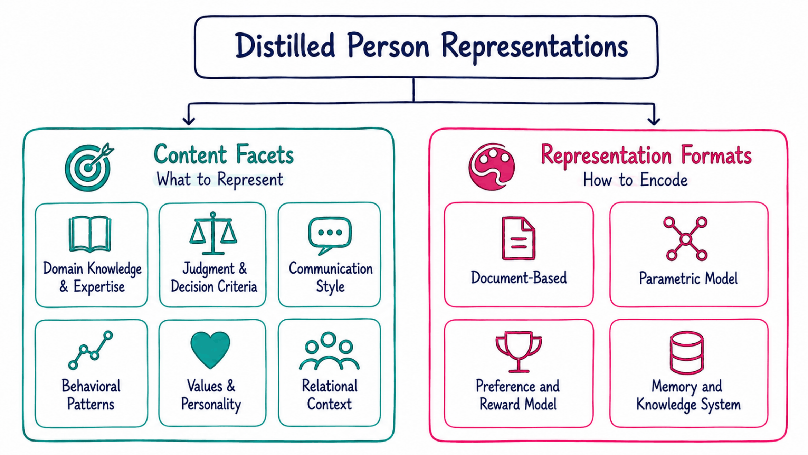
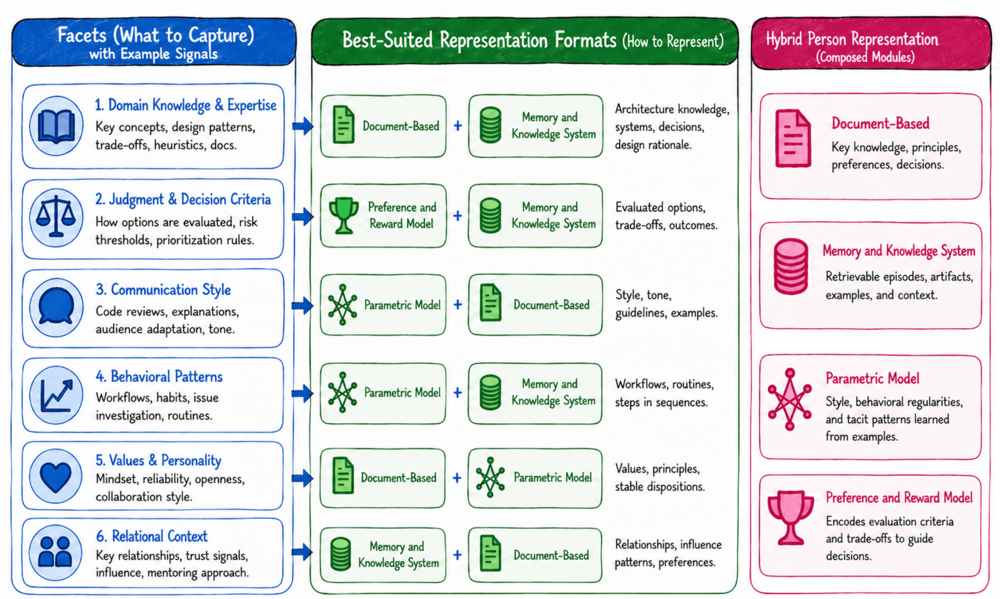
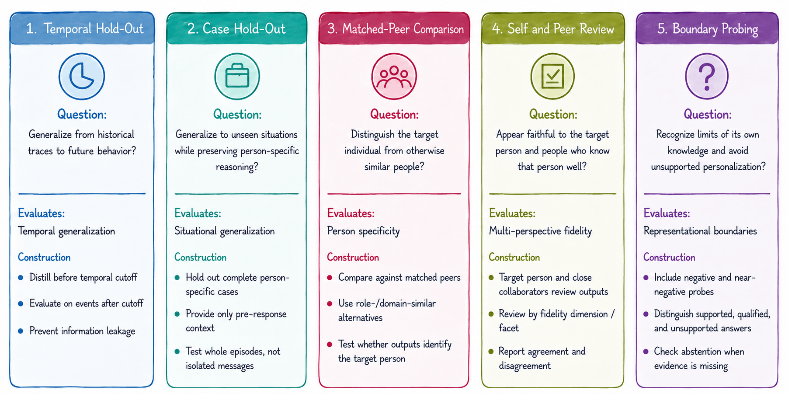

What Is Person Distillation?
Person distillation goes beyond conventional personalization. Personalization typically adapts an AI system to a user's information, preferences, or communication style. Person distillation instead begins with heterogeneous evidence about a particular real person and seeks to construct a faithful computational representation of that individual's domain knowledge and expertise, judgment and decision criteria, communication style, behavioral patterns, values and personality, and relational context.
Unlike conventional knowledge distillation, which transfers capability from a teacher model to a student model, person distillation begins with evidence about a real individual and seeks to preserve person-specific characteristics in computational representations.
Faithfully representing a person is also different from merely imitating one. A system may reproduce someone's writing style while failing to preserve their expertise, make technically correct decisions that differ from the person's judgment, or invent unsupported preferences, experiences, or decision rules.
- What information about the person is supported by the available evidence?
- What makes that information specific to the individual rather than their general role?
- When should the system acknowledge that the evidence is insufficient?

| Lifecycle component | Central question |
|---|---|
| Source evidence | What personal traces are available, and what person-specific claims can they support? |
| Distilled person representations | What facets of the person should be preserved, and how should they be represented? |
| Distillation methods | How should heterogeneous traces be transformed into person-specific representations? |
| Evaluation | How can we determine whether the resulting representation faithfully captures the target person? |
Source Evidence: What Counts as a Personal Trace?
Person distillation begins with source evidence. Personal traces are observable evidence from which a person's knowledge, skills, preferences, personality, relationships, and behavioral patterns can be inferred. They include first-person artifacts such as messages, emails, code commits, authored documents, meeting recordings, social media posts, and activity logs, as well as third-party artifacts such as peer evaluations, performance reviews, media reports, and conversations about the target person.
The available evidence defines the boundary of what can be responsibly distilled. A system trained only on chat messages may imitate communication style but fail to recover technical judgment. A system trained only on task trajectories may capture reusable skills while missing the person-specific reasoning behind them.

| Dimension | Central question | Examples |
|---|---|---|
| Provenance | Who generated the trace? | First-person traces; third-party traces. |
| Modality | How is the trace expressed and organized? | Text, speech, video, images, code, behavioral logs, task trajectories, and relational graphs. |
| Abstraction level | How much interpretation has already been applied? | Raw traces; interpreted or derived traces. |
| Temporality | When was the trace generated, and is its temporal structure preserved? | Snapshot traces; longitudinal or sequential traces. |
These dimensions are complementary rather than mutually exclusive. A trace may simultaneously be first-person, textual, raw, and timestamped, while another may be third-party, visual, highly interpreted, and retrospective. Existing research covers only part of this landscape: role-playing systems primarily model how a person appears, whereas agent skill distillation primarily models how a task is performed. Person distillation requires both the behavioral richness of real-world traces and the evidence-grounded specificity of a particular individual.
Distilled Person Representations
The output of person distillation is a distilled person representation. Designing this representation requires answering two orthogonal questions: what should be preserved, and how should it be encoded. The same person facet may be represented in several computational formats, while one representation format may preserve several facets.

Six Content Facets
Four Representation Formats
| Representation format | Primary role | Strength and limitation |
|---|---|---|
| Document-based representations | Something that can be read | Profiles, skill files, system prompts, and behavioral specifications are transparent, editable, and auditable, but may fail to capture tacit or contextual knowledge. |
| Parametric model representations | Something that can imitate | Model parameters, adapters, embeddings, or other learned components can capture implicit regularities, but are difficult to inspect, revise, and verify. |
| Preference and reward model representations | Something that can evaluate | These models capture how a person compares or ranks alternatives, but evaluating candidates is not equivalent to generating what the person would have proposed. |
| Memory and knowledge system representations | Something that can remember | Queryable memories preserve experiences, timestamps, relationships, confidence, and supporting evidence, but require effective retrieval, abstraction, and reasoning. |

No single representation format is well suited to every facet. Explicit knowledge may be naturally represented in documents, recurring behavioral patterns may be learned parametrically, evaluative judgment may be captured through preference or reward models, and episodic experience may be preserved in memory systems. The central question is therefore not which single representation is best, but how multiple representations should work together.
How Are Person Representations Built?
Distillation methods transform heterogeneous personal traces into distilled person representations. A method must determine what person-specific information to extract, how to abstract it, and how to encode it in the target representation. The methodological landscape contains six complementary families, organized by their primary computational mechanism.
| Method family | Primary mechanism | Central strength and limitation |
|---|---|---|
| Prompt-Based Trace-to-Profile Distillation | Uses an LLM to summarize personal traces into an explicit persona description, skill file, behavioral summary, or structured profile. | Simple, transparent, editable, and easy to integrate, but global compression may discard subtle behavioral patterns, implicit decision criteria, contextual information, and links to supporting evidence. |
| Memory-Based Distillation | Organizes episodes, facts, procedures, relationships, timestamps, and supporting evidence into queryable memory units. | Supports grounded and traceable reasoning, but requires decisions about what memories to construct, how to organize and retrieve them, and how to generalize from past experiences. |
| Parametric and Adapter-Based Distillation | Encodes person-specific patterns in model parameters, adapters, embeddings, or other learned components. | Captures recurring reasoning patterns and behavioral tendencies that are difficult to express explicitly, but is less interpretable and harder to inspect, revise, and verify. |
| Preference- and Reward-Based Distillation | Learns how the person compares or ranks alternative decisions. | Naturally represents judgment and decision criteria, but evaluating alternatives is not equivalent to generating them, and scalar scores may obscure the rationale behind a decision. |
| Behavioral and Trajectory-Based Distillation | Learns from sequences of actions, information gathering, decisions, plan revisions, and responses to feedback. | Captures procedural behavior over time, but real-world human trajectories are often fragmented, incomplete, and distributed across contexts and platforms. |
| Hybrid and Revisable Person Distillation | Coordinates multiple representation formats, integrates heterogeneous evidence, resolves inconsistencies, and updates representations as new evidence appears. | Can preserve complementary person facets, but requires mechanisms for maintaining coherence, provenance, and facet-specific revision across the combined system. |
These families are complementary rather than mutually exclusive. A practical system may use an explicit profile for inspectability, memories for grounded evidence, parametric components for implicit behavioral patterns, and preference or reward models for evaluative judgment. The central challenge is to coordinate them into a coherent and revisable system. Different facets may also need to evolve differently: rapidly changing information may remain in external memory, recurring behavioral tendencies may be updated through parametric learning, and decision criteria may be refined through continual preference learning.
How Should Person Distillation Be Evaluated?
Evaluation is the final component of person distillation. The objective is not merely to produce plausible, useful, or technically correct outputs, but to faithfully represent a particular individual. A system may write like a senior engineer, provide sound advice, or successfully complete a task while still failing at person distillation if its behavior is generic to the role rather than specific to the target person.
The question is not simply “Is the output good?” but “Is this what this person would know, say, decide, or do in this situation?”
The evaluation framework contains four complementary components: evaluation objectives, benchmark construction protocols, evaluation metrics, and evaluation diagnostics. Because a person representation may preserve several different facets, person fidelity should be evaluated as a multidimensional profile rather than collapsed into a single score.
Six Person-Fidelity Objectives
Five Benchmark Construction Protocols

| Protocol | What it tests |
|---|---|
| Temporal hold-out | Whether a representation distilled from earlier traces predicts the person's later behavior without using future information. |
| Case hold-out | Whether it generalizes to previously unseen situations while preserving person-specific reasoning. |
| Matched-peer comparison | Whether it distinguishes the target person from individuals with similar roles, expertise, or backgrounds. |
| Self and peer review | Whether the target person and knowledgeable collaborators recognize the representation as faithful. |
| Boundary probing | Whether the representation abstains, qualifies its answer, or acknowledges uncertainty when the available evidence does not support a person-specific claim. |
Boundary probing is especially important because ignorance is itself part of a faithful representation. The appropriate response is not always refusal: the system may generalize cautiously from related evidence while explicitly stating what remains unsupported. Evaluation should therefore distinguish supported answers, qualified answers, unsupported but plausible answers, and clear hallucinations.
Metrics
- Outcome metrics and decision alignment: whether the representation reaches the same observable outcomes or decisions as the target person. External task success should be reported as complementary rather than sufficient evidence of person fidelity.
- Judgment alignment: whether it identifies similar primary concerns, uses similar evidence, prioritizes considerations similarly, and reaches a similar final stance or action.
- Behavioral trajectory alignment: whether it follows similar information-gathering, planning, revision, and action patterns.
- Facet-level fidelity metrics: which of the six person facets are faithfully preserved and which remain weak or unsupported.
- Communication and relational similarity: whether its characteristic expression and interaction patterns match the person across audiences and relationships, including relative to matched peers.
Diagnostics
- Evidence-grounding diagnostics: whether person-specific claims remain traceable to supporting evidence, including evidence support and unsupported claim rates.
- Boundary diagnostics: whether the representation distinguishes supported conclusions from unsupported speculation and appropriately answers, qualifies, or abstains.
- Consistency diagnostics: whether different evidence sources and representation formats produce compatible conclusions, both globally and for individual person-fidelity facets.
- Evaluation-reliability diagnostics: whether human and model-based evaluations are reliable, including inter-annotator agreement, correlation with human or peer judgments, and separate reporting of self and peer ratings.
Metrics quantify how closely a representation matches the target person, whereas diagnostics explain whether that measured fidelity is grounded, well calibrated, internally consistent, and reliable. A complete evaluation should report both.
Future Directions
As person representations become increasingly persistent, reusable, and capable, they will no longer function merely as machine learning artifacts. They may interact with people, organizations, and other AI systems over extended periods. The central questions therefore extend beyond how person representations should be constructed to how they should evolve, collaborate, be governed, and participate in future AI ecosystems.
| Future direction | Central challenge |
|---|---|
| Lifelong and evolving person representations | Continually incorporate new evidence, revise outdated conclusions, distinguish enduring characteristics from temporary behavior, preserve historical versions, and represent uncertainty arising from incomplete or conflicting observations. Future systems should answer not only “Who was this person?” but also “Who is this person now?” |
| Richer computational representations of people | Preserve not only observable outputs and behaviors, but also the principles, reasoning processes, causal relationships, and decision mechanisms that generate them. These representations should remain interpretable, evidence-grounded, and revisable, and should explain why a person reached a conclusion rather than merely reproducing it. |
| Collective intelligence | Extend person distillation to teams, organizations, laboratories, and scientific communities while preserving complementary expertise, organizational memory, coordination procedures, authority structures, minority viewpoints, and legitimate disagreement rather than collapsing them into an artificial average expert. |
| Governance, consent, privacy, and verifiable unlearning | Consent should specify what information may be distilled, which person facets may be represented, how the representation may be used, how long it may persist, and what authority it may exercise. Systems should also support correction, provenance tracking, accountability, auditing, ownership, and verifiable removal of a person's influence from profiles, memories, learned parameters, reward models, and collective representations. |
| Trustworthy human-AI collaboration | The goal is not autonomous person representations but trustworthy collaboration between humans and their computational counterparts. High person fidelity should not automatically imply unrestricted authority. Future systems should communicate their scope and uncertainty and know when to answer, provide recommendations, seek additional expertise, defer to the real person if available, or abstain. |
| Causal and mechanistic fidelity | Move beyond reproducing historical behavior toward understanding why a person reaches particular conclusions, how competing objectives are balanced, what evidence changes their mind, and how they respond to controlled counterfactual situations. Evaluation should test whether a representation captures the mechanisms underlying human judgment rather than merely reproducing observable outcomes. |
Person distillation is therefore a socio-technical research agenda rather than only a modeling problem. The long-term objective is to develop person representations that are faithful and useful while remaining transparent, controllable, accountable, revisable, and bounded by human authority.
Citation
If you find this work useful, please cite:
@misc{zhang2026persondistillation,
title = {Person Distillation: Foundations and Principles for Personalized {AI}},
author = {Zhang, Minxing and Yang, Yi and Pei, Jian},
year = {2026},
url = {https://person-distillation-foundations.github.io/}
}